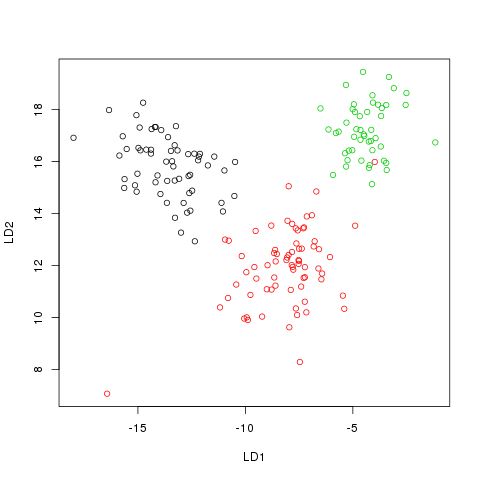
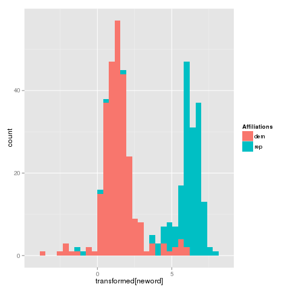

I was reading a very informative blog post by Philipp Wagner on differences between PCA and LDA. He uses LDA to perform clustering/classification task as well. I thought one might combine LDA with k-nearest neighbor algorithm to get better results and this post was born.
Let me load up the wine dataset from UCI:
Raw <- read.csv(url("http://archive.ics.uci.edu/ml/machine-learning-databases/wine/wine.data"),header=FALSE)
head(Raw)
V1 V2 V3 V4 V5 V6 V7 V8 V9 V10 V11 V12 V13 V14
1 1 14.23 1.71 2.43 15.6 127 2.80 3.06 0.28 2.29 5.64 1.04 3.92 1065
2 1 13.20 1.78 2.14 11.2 100 2.65 2.76 0.26 1.28 4.38 1.05 3.40 1050
3 1 13.16 2.36 2.67 18.6 101 2.80 3.24 0.30 2.81 5.68 1.03 3.17 1185
4 1 14.37 1.95 2.50 16.8 113 3.85 3.49 0.24 2.18 7.80 0.86 3.45 1480
5 1 13.24 2.59 2.87 21.0 118 2.80 2.69 0.39 1.82 4.32 1.04 2.93 735
6 1 14.20 1.76 2.45 15.2 112 3.27 3.39 0.34 1.97 6.75 1.05 2.85 1450As we can see the first column is the class column, and the rest are collected data. I will normalize the data
Classes <- Raw[,1]
RawData <- Raw[,2:14]
for(i in 1:13) {
Temp <- RawData[,i]
a <- mean(Temp)
b <- var(Temp)
RawData[,i] <- (Temp-a)/b
}
head(RawData)For the classification examples today, I will take a sample of the data of size 50.
train <- sample(1:dim(RawData)[1],50)To provide a comparison basis, let me use the k-nearest neighbor algorithm to the plain scaled data.
result1 <- knn(RawData[train,],RawData[-train,],Classes[train],k=1)
table1 <- table(old=Classes[-train],new=result1)
table1
chisq.test(table1)
new
old 1 2 3
1 35 4 0
2 15 30 8
3 0 0 36
Pearson's Chi-squared test
data: table1
X-squared = 136.9918, df = 4, p-value < 2.2e-16Some explanations: As you can see train variable stores
the row numbers of the samples I would like to use. So, when I type
RawData[train,] I access the the sample data with all its
columns. For testing purposes, I will use the remaining dataset. I will
access the remaining by typing RawData[-train,]. R is way
too smart sometimes :)
The LDA Method implemented in R finds the best projection of our data so that our projected data is naturally sepearted.
temp <- lda(V1 ~ . , data=Raw, scale=TRUE, subset=train)
temp$scaling
LD1 LD2
V2 -0.166400815 1.088386686
V3 -0.054895512 0.216706654
V4 -0.234723782 3.894955966
V5 0.233996766 -0.184724504
V6 -0.004186575 -0.021311244
V7 1.823359919 0.245921903
V8 -3.342108765 -1.874754016
V9 -5.601994592 -5.477181200
V10 1.238148525 0.185648476
V11 0.021757102 0.163780454
V12 0.205679139 -0.778902934
V13 -1.805836086 -0.419680922
V14 -0.004236699 0.003272157The resulting projection matrix is stored in scaling
part of the variable temp I used above. As you can see, we
can project our dataset into a 2-dimensional vector space, and after the
projection we see
transformed <- as.matrix(Raw[,2:14])%*%temp$scaling
plot(transformed,col=Raw[,1])
Now, let us apply the k-nearest neighbor algorithm to the transformed data.
result2 <- knn(transformed[train,],transformed[-train,],Classes[train],k=1)
table2 <- table(old=Classes[-train],new=result2)
table2
chisq.test(table2)
new
old 1 2 3
1 37 2 0
2 0 52 1
3 0 0 36
Pearson's Chi-squared test
data: table2
X-squared = 239.2184, df = 4, p-value < 2.2e-16And as you can see, the results are much better.
For this example I will use 1984 US Congressional Voting Records which may seem an odd choice as it is not a numerical data set. I will download the data and recode it
curl http://archive.ics.uci.edu/ml/machine-learning-databases/voting-records/house-votes-84.data | \
sed "s/republican/rep/g; s/democrat/dem/g;" | \
tr \?yn 021 Let me import it into R and look at it
Data <- as.data.frame(Raw)
head(Data)
V1 V2 V3 V4 V5 V6 V7 V8 V9 V10 V11 V12 V13 V14 V15 V16 V17
1 rep 1 2 1 2 2 2 1 1 1 2 0 2 2 2 1 2
2 rep 1 2 1 2 2 2 1 1 1 1 1 2 2 2 1 0
3 dem 0 2 2 0 2 2 1 1 1 1 2 1 2 2 1 1
4 dem 1 2 2 1 0 2 1 1 1 1 2 1 2 1 1 2
5 dem 2 2 2 1 2 2 1 1 1 1 2 0 2 2 2 2
6 dem 1 2 2 1 2 2 1 1 1 1 1 1 2 2 2 2Next, I will apply LDA:
N <- dim(Data)[1]
train <- sample(1:N,100)
res <- lda(V1 ~ . , data=Data, scale=FALSE, subset=train)
res$scaling
LD1
V2 -0.05277603
V3 -0.31180088
V4 -0.01763757
V5 3.69611936
V6 -0.31777352
V7 -0.21911098
V8 0.04961548
V9 -0.88154214
V10 -0.23412112
V11 0.46294446
V12 -0.18190753
V13 0.93152234
V14 0.09880560
V15 -0.49315648
V16 -0.37271529
V17 0.32486494The result indicate that I can map my dataset into a 1-dimensional space.
neword <- order(Data[,1])
transformed <- as.matrix(Data[,2:17])%*%res$scaling
Affiliations <- Data[neword,1]
qplot(transformed[neword],fill=Affiliations)
OK. Let me apply the classification algorithm on the sample, and test it on the remaining of the dataset.
res <- knn(as.array(transformed[train]),
as.array(transformed[-train]),
Data[train,1],k=1)
tabl1 <- table(old=Data[-train,1],new=res)
tabl1
new
old dem rep
dem 199 8
rep 15 113And, if we were to apply k-nearest neighbor clustering algorithm to the untransformed data we would have gotten:
res <- knn(Data[train,2:17],Data[-train,2:17],Data[train,1],k=1)
tabl2 <- table(old=Data[-train,1],new=res)
tabl2
new
old dem rep
dem 181 26
rep 9 119And if were to compare we would see
chisq.test(tabl1)
chisq.test(tabl2)
Pearson's Chi-squared test with Yates' continuity correction
data: tabl1
X-squared = 240.6311, df = 1, p-value < 2.2e-16
Pearson's Chi-squared test with Yates' continuity correction
data: tabl2
X-squared = 205.0454, df = 1, p-value < 2.2e-16